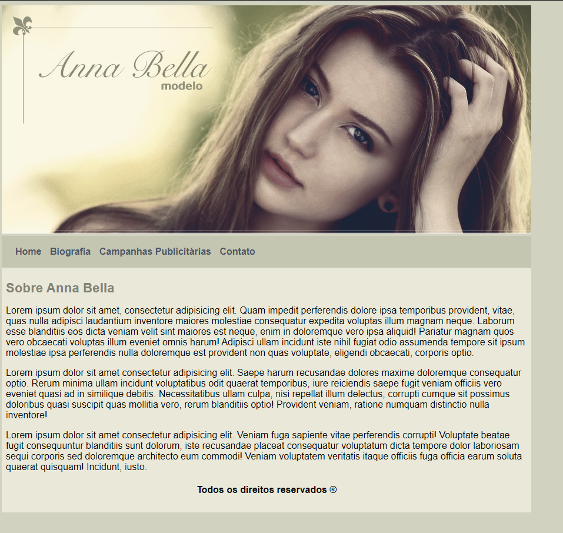
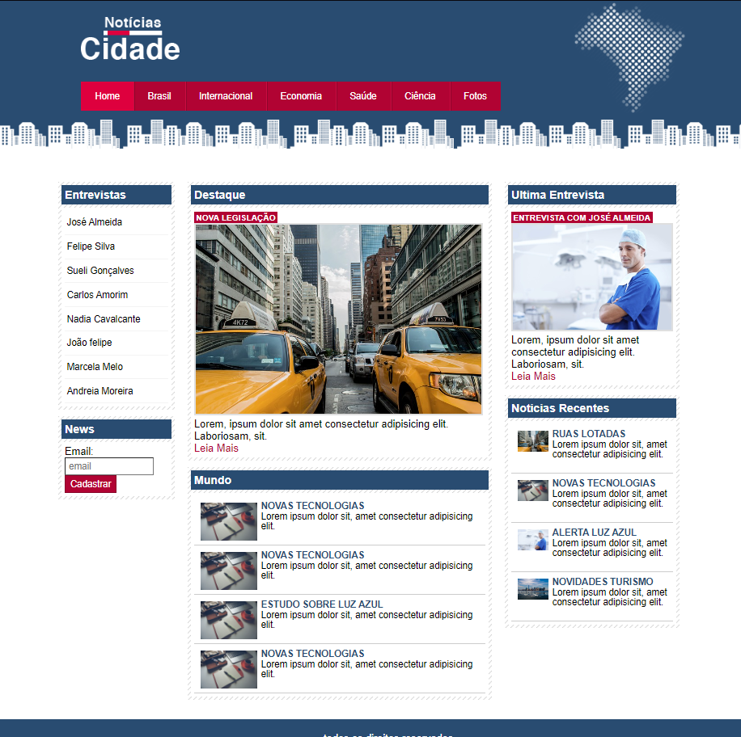
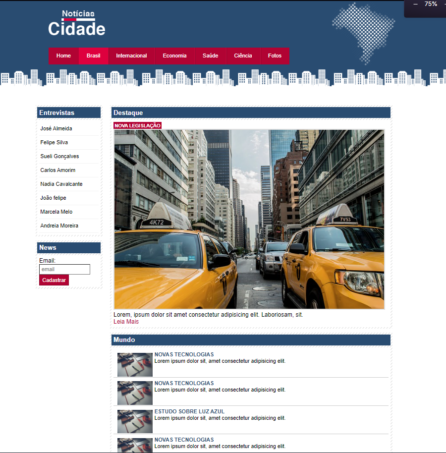
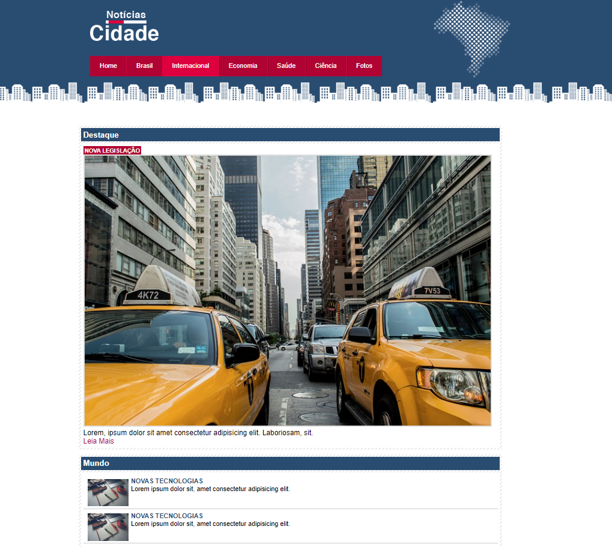
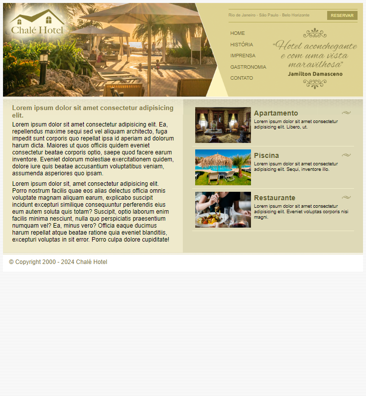
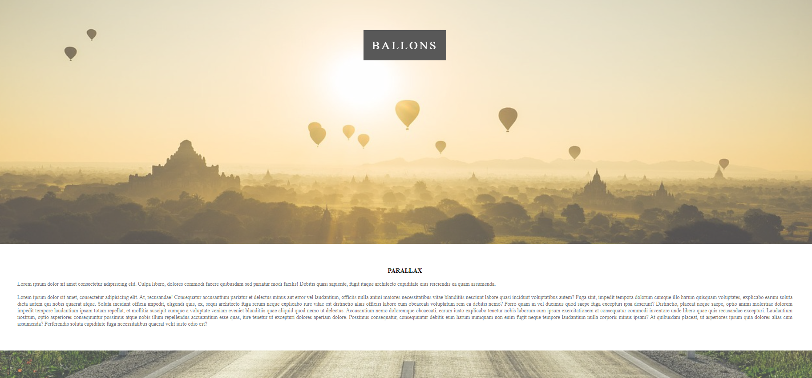
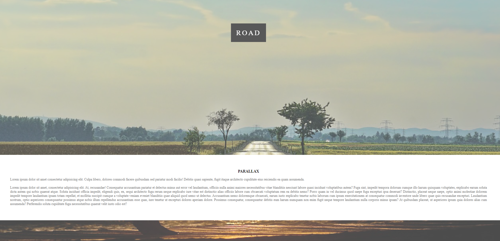
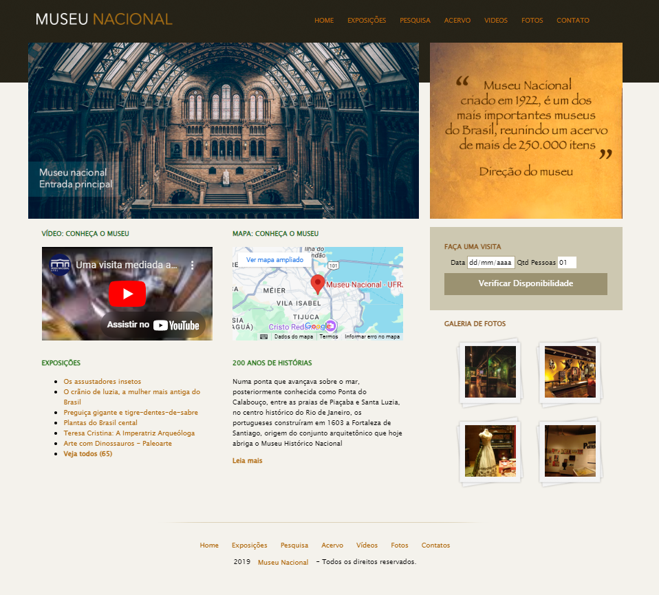

Projetos CSS
My inaugural CSS study project was the development of a website for a fictional model.

Click here to open the site
My second CSS study project was the development of a homepage for a technology website

Click here to open the site
Third CSS project: Designing a homepage and two extra pages featuring multi-column or single-column layouts, utilizing a fixed-width approach.
  
Click here to open the site
The fourth project in my study will focus on creating a homepage that employs a fluid layout

Click here to open the site
The fifth project in my study will focus on creating a parallax effect using CSS exclusively.


Click here to open the site
The sixth and final CSS project in our first course will involve creating a homepage for a fictional museum, utilizing the header, footer, article, section, and aside tags..

Click here to open the site